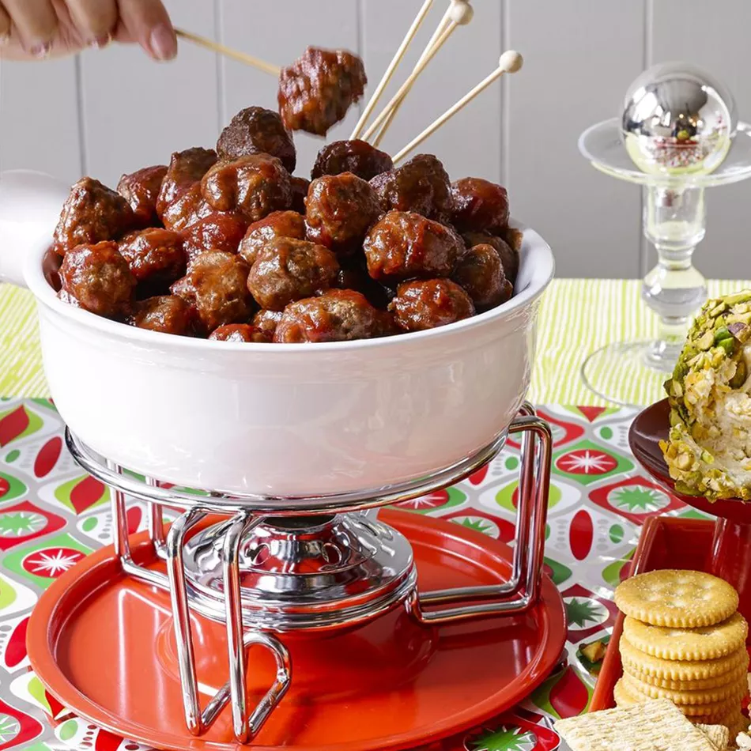

Cocktail Meatballs
Preparation:
Prep Time:
20 min
Cook Time:
1 hours 20 min
Total Time:
1 hours 40 min
Servings:
10
Ingredients
- 1 pound lean ground beef
- ½ cup bread crumbs
- 3 tablespoons minced onion
- 2 tablespoons water
- 1 large egg
- 1 (8 ounce) can jellied cranberry sauce
- ¾ cup chili sauce
- 1 tablespoon brown sugar
- 1 ½ teaspoons lemon juice
Directions
Step 1
Gather the ingredients. Preheat the oven to 350 degrees F (175 degrees C).
Step 2
Mix ground beef, bread crumbs, onion, water, and egg together in a large bowl. Form into small meatballs and arrange on a nonstick baking sheet. Bake in the preheated oven for 20 to 25 minutes, turning once.
Step 3
Stir in crushed tomatoes, tomato sauce, tomato paste, and water. Season with sugar, 2 tablespoons parsley, basil, 1 teaspoon salt, Italian seasoning, fennel seeds, and pepper. Simmer, covered, for about 1 ½ hours, stirring occasionally.
